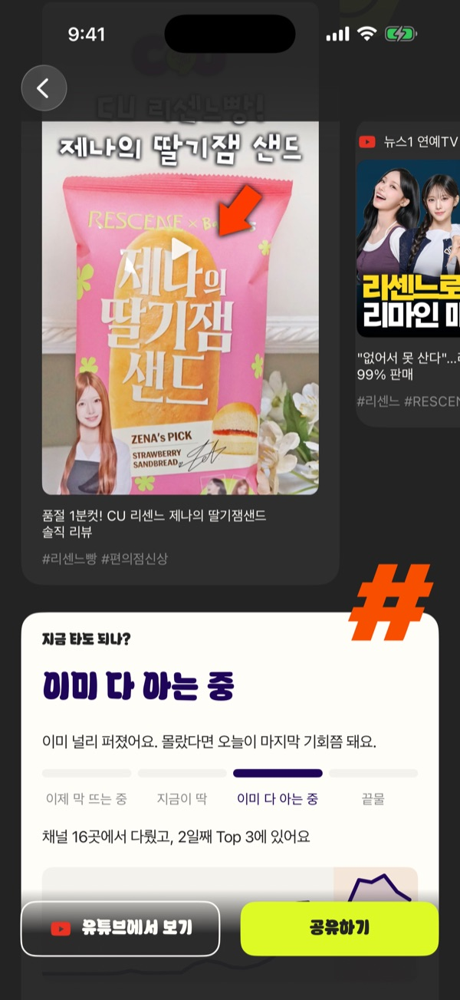
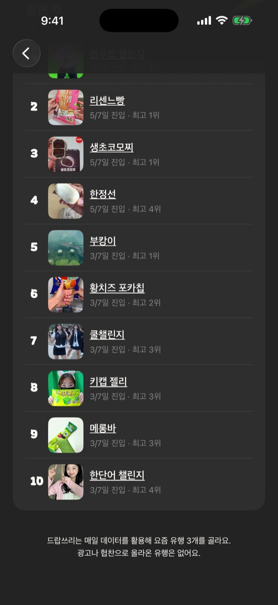
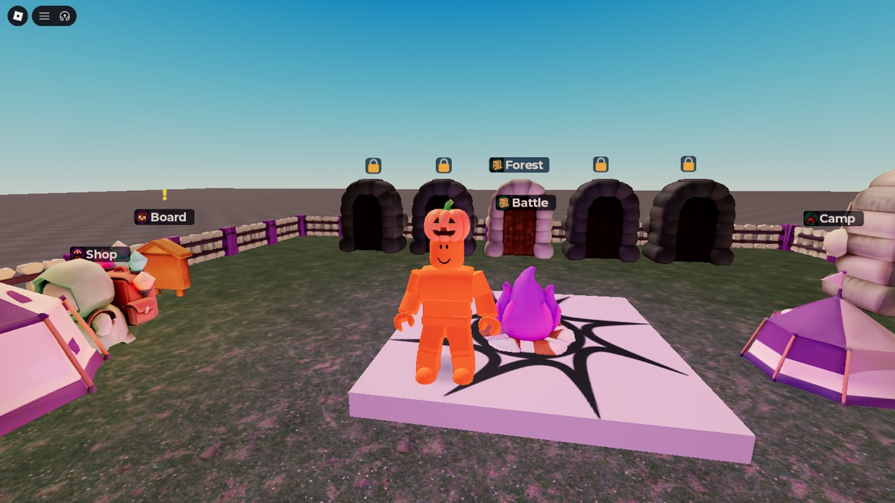

드랍쓰리 (DropThree)
남들보다 하루 먼저 아는 유행.



문제
실시간 검색어가 없어진 뒤로 지금 뭐가 뜨는지 한 번에 볼 곳이 없습니다. 유행은 숏폼에서 며칠 만에 돌고 끝나서, 모르면 대화에서 그냥 빠지게 됩니다.
해법
긴 목록 대신 딱 3개. 각 유행이 막 뜨는 중인지, 지금이 딱인지, 끝물인지까지 알려줍니다.
광고나 협찬으로 올라온 유행은 없습니다.
누가 돈을 내나
일반 사용자는 무료로 매일 들어오고, 광고로 수익을 냅니다.
유행을 남보다 먼저 알아야 돈이 되는 사람들, 브랜드 마케터, 편의점 MD, 크리에이터에게는 "뜨기 직전" 신호를 유료로 팝니다.

고르는 방식. 검색량이 아니라 여러 유튜브 채널이 동시에 다루기 시작했는지를 봅니다. 채널 3곳 이상이 평소보다 뜨겁게 반응해야 후보가 됩니다.
토스 퀀트 (toss-quant)
감으로 하던 투자를, 내 돈으로 검증한 규칙으로.
문제
개인 투자는 대부분 뉴스와 커뮤니티 분위기로 움직입니다. 일관성이 없고, 그 방식이 맞았는지 나중에 확인할 방법도 없습니다. 직장인은 장중에 볼 시간도 없습니다.
왜 지금
2026년 토스증권이 주문과 시세 Open API를 열었습니다. 개인이 자기 계좌에 자동 운용을 직접 연결할 수 있게 된 첫 시점입니다.
사업 가능성
먼저 제 계좌에서 모의 3개월, 실전 3개월을 돌려 검증합니다. 통과한 규칙만 개인 투자자가 자기 계좌에 붙여 쓰는 상품으로 냅니다.
국내 상장사 주주는 1,456만 명입니다 (한국예탁결제원, 2025년 12월 결산 기준).
검증 기준. KOSPI보다 연 5%p 이상 더 벌고, 최악의 낙폭은 -20% 안으로 막아야 통과입니다. 아직 백테스트 전 단계라 수익률은 없고, 통과하기 전에는 실전 주문을 켜지 않습니다.
Cursed Night
전 세계 로블록스 친구들이 같이 버티는 20분.



기회
뱀파이어 서바이벌, 탕탕특공대 같은 "몰려오는 적을 쓸어버리는" 장르는 PC와 모바일에서 이미 크게 검증됐습니다. 로블록스 사용자는 친구와 같이 노는 게 기본이라, 이 장르에 4인 협동을 붙였습니다.
다시 하게 만드는 것
플레이 방식이 전부 다른 캐릭터 18명, 무기 진화와 합체, 맵 3개와 저주 5단계, 주간 랭킹. 시간이 없으면 10분짜리 "짧은 밤"도 있습니다.
수익 구조
VIP 패스, 캐릭터와 스킨 팩, 스타터팩, 배틀패스, 광고 보상까지 상품 26종을 설계했습니다.
원칙은 하나. 돈으로는 시간 단축까지만 사고, 클리어 자체를 살 수는 없게 합니다.
공개 계획. Roblox에 게시는 끝났고, 유료 상품을 등록한 뒤 영어권부터 공개합니다.